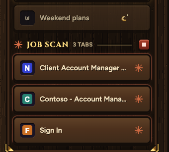
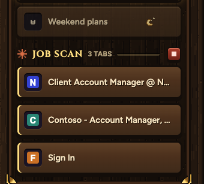
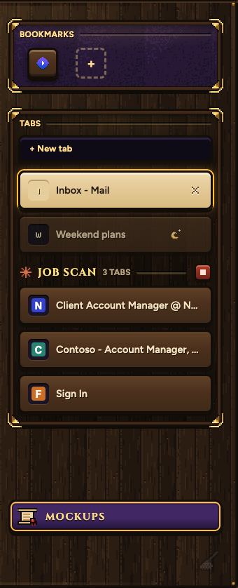
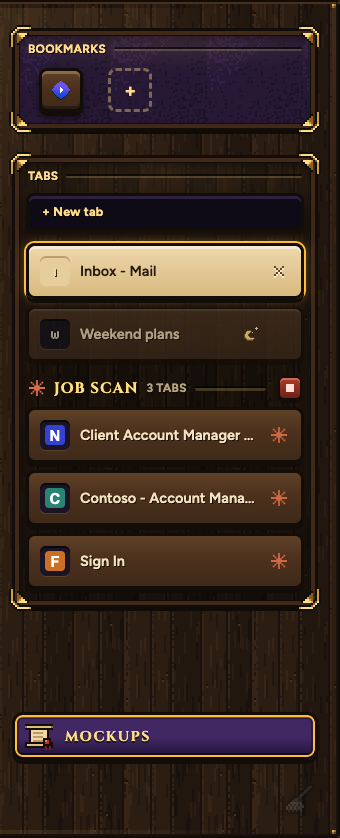
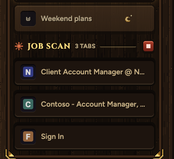
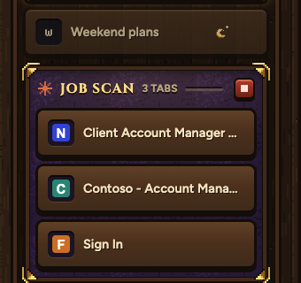

Claude's spark at the end of each row, and a soft orange glow in Claude's own orange that breathes in and out every 3 seconds. These are 8 real frames from Samara, played in a loop.

Earlier options (v2):
The gold strip means: Claude is using this tab, not you. But the header above already says that (Claude's spark, JOB SCAN, the stop key). Four ways to drop the strip, shown at 2x so you can see them.
The gold strip on each of Claude's tabs.

No mark. The header names the group, like a party in a game menu. Least clutter.

Claude's spark where your tabs have the close key. Clear even when scrolled past the header.

Your tabs stand up like keys. Claude's sit pressed into the board: borrowed, not yours.

My pick. Claude's group sits in its own sunk velvet shelf, the same frame as your bookmarks. Tells you at a glance, no stripes.
